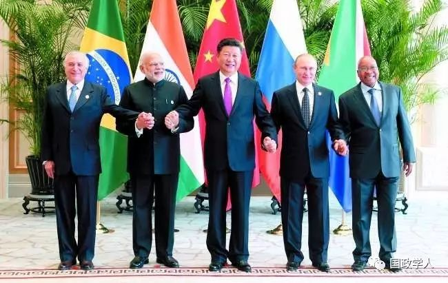

收录于合集
作者
简介
陈鹏，上海交通大学马克思主义学院副教授，副院长
奚洁人，中国领导科学研究会副会长，上海市领导科学学会会长，中国浦东干部学院首任常务副院长，教授，博士生导师
国际领导力是国际行为主体间的引领性影响力，具有源于实力又高于实力的相对独立性，是由社会主体发展不平衡所导致的社会历史现象。它具有主体间性、博弈性、引领性、建构性、过程性特征，涉及政治、经济、文化、制度等要素及其结构。马克思主义注重领导力的先进性、深刻性、整体性、博弈性和价值观特征。国际领导模式包括组织内和组织外两种，先进性是基础，树立典范是根本，处理利益关系是抓手，根据矛盾区别对待是重点，调动一切积极因素是导向，组织平台是载体。中国国际领导力是随着民族复兴，按照独立—融入—引领的逻辑形成发展的，其核心是中国道路的领导力，目前需应对生产方式升级、守成大国遏制、国际话语权和规则制定权不足、提供国际公共产品的理论储备和实践经验欠缺等问题。中国国际领导力未来发展需要在构建先进生产方式、创立新型国际交往模式、升级国际统一战(治)线、构建人类命运共同体等八个方面进行建设。 摘要
摘要
关键词： 国际领导力/先进性/生产方式/人类命运共同体

国际领导(力)现象源远流长，伴随着国际社会的形成发展。近代以来，随着世界生产力——交往关系——上层建筑矛盾的发展，原来分散的地域性实践系统逐渐连成统一的世界体系，世界历史随之进入新阶段。当今国际局势正发生深刻变化，世界几大力量中心具有不同层次的国际领导力。随着综合国力的增强，中国的国际影响力已达到量变向质变跃升的关键点。无论从国家利益出发，还是从回应世界和平发展需要出发，国际领导力问题已摆在中国面前。马克思主义为正确认识把握国际领导力问题奠定了科学基础，但与国际交往实践结合需要具体分析。相关问题系包括：什么是国际领导力？国际领导力的特征和规律？中国如何形成、发展国际领导力？我们需要运用马克思主义揭示国际领导力本质规律，提出增强中国国际领导力的方略。
一国际领导力是国际行为主体间的引领性影响力
要弄清何为国际领导力须弄清何为领导力。管理学界对这一问题进行了系统研究。从领导特质论、行为论、权变论到基于愿景、变革、文化的领导力理论，形成了系统研究范式，但和国际问题尤其是中国国际战略的结合研究尚处于初始阶段。领导特质论认为，领导力是特定主体的素质；行为论聚焦于主体行为方式；情境论认为领导的关键是定规(initiating structure)和关心(consideration)；权变论认为领导现象取决于主体行为和环境的关系；领导力理论则认为领导现象基于愿景、变革和文化。但是主体特定素质并不必然导致领导的成功，正如斯托格第尔(Stogdill)证实的：“领导(力)是一种关系，这种关系存在于社会情境中的人们之间，在一种情境的领导者可能并不必然成为另外一种情境中的领导者。”①领导行为由主体内在驱动同时受环境制约，主体与环境变化会使同样行为产生不同后果。情境论、权变论注意到关系和环境，但对深层原因没有解释。领导力的本质是什么？沃伦·本尼斯(Warren Bennis)说：“领导力就是人格。”②约翰·科特(John Kotter)认为领导力就是“通过非强制性手段带领团队向特定方向前进”的能力。③领导基于非强制性，与基于强制性权力的“管理”相区别。④管理针对当下复杂性，而领导面向未来变革和发展。领导力和权力不能画等号，它既包括基于权力的支配性影响力，也包括非权力感召性影响力，后者更为重要。
从马克思主义角度看，领导关系是一种主体交往关系，领导力是一种主体间的引领性影响力。它有五个特征：首先，领导(力)现象是主体(个体、群体、国家或组织)间关系现象；其次，领导力具有博弈性，其机制是需要和利益博弈；第三，领导力具有引领性，其方式是引领而非胁迫和诱导；第四，领导力通过主体双向甚至多向交往关系建构实现；第五，领导现象具有过程性，会经历不同阶段。人类社会为什么存在领导现象？这是由社会主体发展的不平衡决定的。有些主体具有特定优势和先进性，有将其意志和群体意志结合的资格和意愿。另一些主体认为在领导关系中可以更好、更快、更安全、更有秩序地满足需要，于是领导关系得以建构。马克思将社会比喻为乐队：“一个单独的提琴手是自己指挥自己，一个乐队就需要一个乐队指挥。”⑤“凡是有许多个人进行协作的劳动，过程的联系和统一都必然要表现在一个指挥的意志上”。⑥恩格斯说：“一开始就存在着一定的公共利益，维护这种利益的工作，虽然是在全体的监督之下，却不能不由个别成员来担当。”⑦没有权威领导的统一指导意志，合作是不可能的。所以领导现象是基于社会主体存在发展的需要。正如约翰·科特所说：“领导满足人们基本的人类需要，从而激励他们。”⑧这是领导现象的共性。
那么什么是国际领导力呢？美国学者伊肯伯里(G.John Ikenberry)将国际领导力定义为“在国家间交往中推动合作、形成社会目标共同体的能力”。⑨约瑟夫·奈将领导关系界定为由领导者、追随者和互动环境三要素组成的社会关系，领导力是帮助群体“创建并实现共同目标”的能力。⑩而布热津斯基将“领导”作为“主宰”的对立面深入分析，(11)提出美国必须摒弃“主宰者”心态，回归“领导者”方式。国际领导力源于实力又高于实力。国家实力衍生出领导力，但领导力不等于实力。汉斯·摩根索曾说：精神联系是政治权力的本质，一旦诉诸武力，政治关系中的精神因素就不复存在了。即实力是基础，但从实力衍生出的威望才是领导力。领导力具有相对独立性，领导国往往实力下降一段时间后才逐渐失去领导力，国家实力强大后经过一段时间才形成领导力。一战后美国已成为世界最强国，但直到二战后才取代英国成为领导国。美国布什(George W.Bush)总统时期倚重硬实力奉行单边主义，虽然国家实力没有明显减弱，但国际领导力受到明显侵蚀，这也说明领导力与实力的不同。
如何从马克思主义角度概括国际领导力？国际领导力具有领导力共性特征，但是“国际”限定了问题域。马克思主义视域中的国际领导力，是指特定国际行为主体(国家、国际组织、跨国公司等)之间的引领性影响力，或人类整体实践系统中主体性实践子系统间的引领性影响力。
二国际领导力的特征和规律
1.国际领导力总体特点 ****
领导(力)的关键在于主体性让渡。在国家内部主要体现为政府和市场关系的处理；在国际社会表现为政治分立与经济一体化的矛盾。国际、国内领导现象涉及要素类似，主要差异在于领导力和领导权的结合方式。国内有统一的权力架构，主体需要通过“主渠道”获得领导权才能实现领导；而国际社会不存在统一权力架构，主体实现领导的方式是“多渠道”的。以国家为典型的实践子系统和人类整体实践系统的差异在于：前者系统内博弈形成了统一意志和主体性，后者系统内博弈没有形成统一意志和主体性。虽然有时多个子系统又结合成特定系统，如各种国际阵营，其中有核心国扮演领导角色，但人类实践总系统未形成统一意志和主体性。
基于国际实力分配(distribution of inter-state capabilities)的国际领导力分配(distribution of global leadership)并不均衡，相对集中于强国。历史上(曾经)具有全面国际领导力的典型是英国、美国。其他如法国、德国、俄罗斯等具有不全面的国际领导力。《北京共识》一书认为国家体系分为多个层次：美国仍处于世界体系金字塔塔顶，英、法、德、日、俄、巴西、印度、中国与美国分享重要权力。往下分别是油气资源丰富的国家、地区性中等国家、负责任的国家以及“无赖”或“失败”国家，迅速兴起的非国家行为体也在全球参与权力分配。(12)随着世界局势发展变化，国际领导力的内容和形式也在发展。
2.国际领导力要素及其特征 ****
国际领导力涉及政治、经济、文化、制度等要素。约瑟夫·奈在《注定要领导》中区分了“硬实力”与“软实力”。(13)硬实力指经济、军事、科技等实力；软实力指文化、价值观等感召性影响力。事实上，基于政治实力的威望，经济实力的吸引，文化实力的感召，制度实力的整合构成了国际领导力，它是各种要素有机结合的整体魅力。现实主义、自由主义、建构主义、马克思主义等理论各有侧重的维度，而国际行为主体往往采取不同比例方式的“结合”方案。
国际领导力政治要素。很难将政治领域的权力性和非权力性影响力区分开来。虽然影响重在感召，权力重在支配，但政治领导力和权力紧密联系。国际政治影响力的发挥有三种情况：被迫就范、利益考量、政治认同。第一种不是国际领导力而是国际强制力；第二种尤其第三种才是国际领导力。威望是国际政治领导力的重要体现，主要基于各种斗争力，不只体现在军事上，还包括各种竞争。威望的形成主要不是通过合作，而是通过斗争展示素质和意志。有时领导者未能取胜甚至失败，但表现出了被领导者认可的素质，也可形成威望，比如弱国反侵略战争。同样的，领导者虽战胜对手但如表现出素质意志缺陷，也会减损威望。
国际领导力经济要素。这是国际领导力的根本，需量大质优引领世界经济发展。二战后美国“马歇尔计划”是经济领导力的典型例证。中国的“一带一路”和“亚投行”战略，虽然在内涵和本质上不同于前者，但也是当前国际经济领导力的标志性体现。主导性经济生产要素存在历史变化：在自然经济时代，土地(或森林、草原、海洋、湖泊等自然资源)是主导性生产要素；资本主义生产方式建立后，货币资本起决定作用；信息知识经济时代，科学技术和管理成为主导要素。科技要素融于其他要素发挥着关键作用。当前人类科技正孕育新一轮变革，以大数据、云计算、可穿戴设备为标志，必将塑造出新型世界经济。
国际领导力文化要素，主要指文化感召力。文化是主体生存方式的精神表现，其核心是价值观。亨廷顿曾用“文化的作用”解释国家发展的差异。(14)美国将中国视为主要威胁的根本原因是价值观的差异。文化是多位一体的领导力构成中的最高层次，意义解释话语权是领导力确立的标志。美国国家利益委员会曾宣称“保持在国际信息传播方面的优势，以确保美国价值观继续积极影响他国文化”。(15)这说明：文化的核心是价值观，价值观是国际领导力重要要素，文化领导力需要信息传播话语权，文化价值观领导力与国家利益紧密相关，信息传播优势和价值观领导力可以有意识培养保持。文化领导力具有长期性、潜移默化性。可能主体尚未取得领导地位但已具有文化领导力，比如我党延安时期虽未取得全国政权但已具备思想文化领导力。也有可能主体未失去领导地位，但已丧失文化领导力，如文艺复兴时期的封建势力。如果取得信息传播垄断地位，是否可以说具有文化领导力呢？这里须注意文化垄断权和文化领导权不同。有文化领导权不一定有文化垄断权；有文化垄断权也不一定有文化领导权。只有垄断文化植根的生产方式处于上升期，这种文化才具有领导力；如果其植根的生产方式处于衰落期，这种文化领导力已衰减。
国际领导力制度要素。制度是相对稳定的关系，制度领导力是结构性的交往方式领导力。国际制度可以决定国际议程，提供相对稳定的秩序，具有一定的强制、监督、预期和补偿功能，可遏制背叛和搭便车行为，解决利益冲突，消除不确定性。国际制度是国际领导力得以实现的重要框架。
3.国际领导力要素结构 ****
在马克思主义看来，国际领导力是多要素构成的整体，是一种社会历史现象，具有共性和阶段特征以及结构和过程两种维度。从共性特征看，拥有先进生产方式并在国际博弈中发挥领导作用是核心；从阶段特征看，不同时期主导要素和要素结构有差异。马克思主义领导理论强调要素的先进性是领导力的根本：先进事物即使开始弱小最终将战胜落后事物；注重要素的“深刻性”：生产方式在根本上决定着国际领导力；注重要素的有机结合性：要素关系结构是关键；凸显要素博弈和价值引导特征：基于主体实践寻找领导“路径”，基于价值排序进行引领。在国际领导力要素结构中，马克思主义强调生产力是社会存续发展的基础。四种社会生产对应四种生产力以及四种生产关系，与领导力都有相关性。物质生产是经济力的基础；精神生产决定国家软实力；交往关系生产对制度领导力至关重要；人口生产也关系到国家的世界比重。它们又分别对应四种生产关系。物质生产——物质生产关系、精神生产——精神生产关系、人自身的生产——两性关系、生产关系生产——社会交往关系，它们共同构成领导力。
4.国际领导力要素关系 ****
苏珊·斯特兰奇曾分析过安全、生产、金融和知识四种结构性权力的相互支撑关系。美国学者提出的“巧实力”也主要涉及领导力要素关系。如何运用马克思主义认识处理国际领导力要素关系？首先，要素有机结合会产生新的特征和功能。1+1有时＞2有时＜2。这些要素关系是互动的、辩证的。对国际领导力影响最直接的是政治因素，经济、文化和制度因素的作用相对较间接，但并非重要性低于政治，恰恰相反，它们是政治要素的后盾。经济是国际领导力的基础，但经济力需要转化为其他能力并和其他能力一起构成领导力。政治力也可转化为经济力、文化力，文化力也可转化为经济力、政治力。要素的“具有”和“转化”对国际领导力同样重要。
5.国际领导力作用模式 ****
如何进行正确领导？根据马克思主义，成功的领导关系基于领导者和被领导者的认识、能力和选择，需要在尊重社会客观规律基础上，在先进价值观指引下建构。领导力的增强、保持或衰减取决于先进性的形成、保持和发展。领导首先要以先进生产方式为依托。在国家、阶级和个人关系中阶级性是本质，这是马克思主义的特色分析方法。阶级分析既突出主体间性，又避免了个体失之过窄、国家失之过泛对问题本质的掩盖。但绝不能脱离生产方式谈阶级，马克思主义阶级分析方法的本质是生产方式分析。生产方式中不同阶级扮演不同角色，构成功能整体。所以只能在博弈性阶级组合中而绝不能孤立研究阶级。特定生产方式和阶级组合是一体的。生产方式的新旧更替伴随阶级组合的新旧更迭。国际、国内领导力的根本依托都是以特定生产方式为核心的历史实践集团。所以，国际领导应科学分析世界生产方式及阶级状况，推动以先进生产方式为核心的世界历史实践集团的形成发展。正如列宁所说：“无产阶级专政不只是对剥削者使用暴力，甚至主要的不是暴力。这种革命暴力的经济基础，它的生命力和成功的保证，就在于无产阶级代表着并实现着比资本主义更高类型的社会劳动组织。实质就在这里。”(16)
其次，主体需要争取领导权。这也是马克思主义领导思想的侧重点，强调先进主体掌握领导权是决定条件和根本保证。新自由制度主义认为相互依存的不对称是国际权力的来源。那么领导权是否源于相互依存的不对称呢？这值得商榷。先进领导者不会因依存的不对称才掌握领导权，这不符合逻辑。领导者与被领导者的需要不对称也是不辩证的。相互依存的不对称的确可使特定主体在博弈中掌握主动，但这并不能推导出领导力和领导权。事实上它们源于主体发展的不平衡。在马克思主义那里，领导者应向被领导者揭示规律和趋势，通过价值观引导建立道义合法性，提出愿景目标和实现路径，组织人事角色分工以制度整合秩序，并及时调整改进。
国际领导机制包括领导关系、领导目标、领导力优化、领导策略等。领导与被领导者是需要互补关系，含组织内和组织外两种模式。组织内领导有严格的理念、章程、制度和纪律，是构成统一主体的领导模式。其优势是组织严密，执行力强。组织外领导有理念、政策引导，但没有严格的制度、纪律，是多主体协调模式。其优势是集思广益、促进协同。两种模式各有适合的领域和情况，如军事领导一般采取组织内模式，国际领导多采取组织外模式。两种模式虽然不同但可“对接”，如在领导机制核心层采取组织内模式，在中间或外围层采取组织外模式。一般情况下往往将两种模式以不同比例方式结合。领导目标是领导行为指向的任务。领导者要围绕主要矛盾和特定历史任务选择被领导者，并在领导过程中调整关系、优化领导力。提供国际公共产品是进行国际领导的主要内容。
6.国际领导力实现方式 ****
国际领导力实现方式随历史发展而演进。主要是：领导国基于实力引领、组织国际行为体协调行动和关系，创设和维护以制度、组织为框架的国际秩序，提出愿景、形成文化价值观感召力等。这些方式往往结合采用。现实主义认为霸权是国际领导的主要方式，新自由制度主义认为通过国际制度可能实现“霸权后”领导，建构主义强调国际文化的建构。扎卡利亚认为“国际问题有诸多不同的应对办法和解决渠道，因而会形成不同层次的稳定机制”(17)。领导国应因事制宜地运用“照单点菜式的多边主义”维护领导力。而戴维·辛格认为国际领导方式靠三P：认知(perception)，预测(predictions)，偏好(preferences)。(18)从马克思主义来看：
(1)树立典范是领导方式的根本。即领导者可供被领导者借鉴效仿，启示其发展方向。如美国曾为资本主义世界树立了典范，即“华盛顿共识”。近年来中国道路(模式)被西方学者概括为“北京共识”，虽然这种概括值得商榷，但从国际领导力角度看，如果一个国家的发展道路(或新的发展模式)能在世界的一定范围内获得认同和支持，并产生积极影响，是该国家国际领导力提升的重要标志。
(2)处理利益关系是主要抓手。国际领导应围绕需要利益进行实践结构分析，在关系中寻找路径。领导和被领导者利益的一致性是领导关系的基础，但在具体利益上仍可能出现分歧。这时需以整体根本长远利益为转移的具体分析，或领导者优先或被领导者优先。如国际整体利益和领导国利益的矛盾需要综合统筹权衡。可以采取将共时性转化为历时性的方式解决。所谓共时性问题指各方利益在结构中出现矛盾，这时优先满足一方(或几方)利益，在随后历时性发展中补回之前让步方的利益。这就避免了利益僵持，但后续补偿须有保障。很多时候领导国需进行利益让渡，因为领导力本身包含责任成本。
(3)根据矛盾区别对待是方式重点。被领导者的差异、层次主要根据与领导者的利益关系来区分。利益基本一致的是核心基础层，部分利益一致的是中间层，根本利益不一致，但某些情况下某些问题上可以和领导者合作的是外围层。领导者对不同被领导者应重点区别对待。如历史上抗日民族统一战线中工农阶级和城市小资产阶级是核心层，民族资产阶级是中间层，英、美派大地主大资产阶级是外围层，我党对其分别采取了不同策略。国际领导也遵循这一原则。
(4)调动一切积极因素是导向。马克主义领导思想强调调动一切积极因素，“在政治上为了一定目的，甚至可以同魔鬼结成联盟，只是必须肯定，是你领着魔鬼走而不是魔鬼领着你走”。(19)列宁曾指出：要利用一切机会，哪怕是极小的机会来获得大量同盟者，尽管这些同盟者可能是暂时的、动摇的、不稳定的、靠不住的、有条件的。(20)有两种同盟军，一种是直接可以团结的力量；另一种是间接的即敌人营垒中的矛盾。毛泽东领导思想也强调这一点。另外，特定情况下做非原则性妥协、消除弱化消极因素是重要策略。可以说调动一切积极因素、不断扩大夯实领导基础是基本导向。
(5)组织平台是国际领导力载体。马克思主义自创立起便具有国际视野，强调世界先进主体的联合。《共产党宣言》提出“全世界无产者，联合起来！”，强调“努力争取全世界各国民主主义政党之间的团结与协议”。(21)列宁号召“全世界无产者和被压迫民族联合起来”，世界革命不仅是无产阶级的“联合行动”，而且是“各先进国无产阶级”同“不发达的、落后的和被压迫的民族”的联合行动。(22)采取何种领导形式呢？国际共运史上曾建立多个“国际”，如第一国际、共产国际，采取了不同领导方式。第一国际采取间接指导协调的方式，共产国际曾采取直接干预人事和政策的方式。从历史经验教训看，由于国情差异问题具体，国际组织对各国直接领导很难做到。但各国领导者至少应形成某种协调，至于组织形式可根据历史发展而定。至少目前国际领导采取“统分结合”模式最合理、最可行。今后随着人类命运共同体发展，有可能形成全球性领导平台。
三中国国际领导力现状及未来发展
国际领导力是国际行为主体的核心竞争力。随着国际地位提升，中国的国际领导力在孕育形成，同时面临诸多问题。我们需要对中国国际领导力现状有清醒认识，同时对未来发展做深入思考。
1.中国国际领导力总体特点 ****
中国古代对周边国家有较强领导力，形成了以朝贡体系为标志的领导模式，但这种国际领导力主要是区域性的。近代以来，中国迭遭内忧外患沦为半殖民地半封建社会。以中国共产党为代表的各种进步政治力量和社会团体为救亡图存提出并实践了各种方案。这些虽谈不上发展中国的国际领导力，但毕竟为民族复兴进行了精神和物质“积累”。在中国抗日战争及世界反法西斯战争中，中国国际地位得到明显提升。新民主主义革命胜利及中华人民共和国的成立，标志着中国国际领导力发展进入到一个崭新的阶段。
中国国际领导力是随着民族复兴，按照独立—融入—引领的逻辑形成发展的。由于以马克思主义为指导，中国抓住了领导力的核心：先进生产方式，同时追求政治影响力、经济竞争力、形象亲和力、道义感召力的统一。中国善于把握机遇发展国际领导力。所谓机遇是有利条件相对集中的实践态势。主体可能认识或忽视、把握或错失机遇。机遇大小要看影响的广度深度，但对领导力都会产生量的积累或质的跃升作用。中国善于在局部形成相对优势再向全局转化，注意“内外兼修”统筹国内国际两个大局，通过改变发展自身影响世界。国内发展为国际战略奠定基础，国际战略为国内发展创造条件。在对世界进行历史现象学式深刻认识基础上，中国通过改革开放形成了中国道路，并一以贯之地坚持独立自主和平外交打破强而必霸的逻辑，推动建立国际政治经济新秩序。中国的国际领导力具有独特而深远的世界意义。正如保罗·肯尼迪所言：“凭中国的分量，它在一定意义上应被看做候补超级大国—并非仿效苏联或美国的那种超级大国，而是反映北京在全球政治中的独特地位的那种超级大国。从长远看，中国代表着一种政治和战略势力，它是如此之重要，以至于既不能把它看做是莫斯科或华盛顿的附属物，也不能把它简单地看做是一种中间力量。”(23)
2.中国国际领导力的发展进程 ****
中国国际领导力理论基础是马克思主义国际关系(尤其是国际统一战线)理论，同时扬弃其他理论，现实基础是中国外交实践。近代民族民主革命是为中国国际领导力形成发展积累条件阶段，取得民族独立是第一阶段，改革开放融入世界是第二阶段，全面提升国际领导力是第三阶段。第一阶段以政治要素为引领，第二阶段以经济要素为中心，第三阶段以要素多位一体结合为主导。
毛泽东为中国国际领导力打下了全方位基础，形成了中国外交基调和哲学方法论，也取得重要现实成果，政治军事要素的强化使中国树立了威望，基本确立了独立自主的大国地位。邓小平调整了时代主题判断，重新定位中国与世界的关系，使中国国际领导力基础和要素结构发生重大转型。围绕现代化建设对外开放与世界建立有机联系，以生产力发展为根本依托；“韬光养晦，决不当头”，体现了中国国际领导力卧薪尝胆、蓄势待发的战略智慧，为形成真正的国际领导力夯实基础。以江泽民为核心的第三代领导集体，在中国外交战略上，既保持“韬光养晦”的原则，又有新的探索发展。以新型伙伴关系、成立上海合作组织、提倡“新安全观”、“走出去战略”为标志，开始向世界提供制度和理念性公共产品，中国国际领导力展现出的面貌。以胡锦涛同志为总书记的党中央领导集体，提了出共建“和谐世界”理念，倡导国际关系平等民主、国际经济合作共赢、不同文明交流、新安全观等，初步显现出国际领导力的整体系统性特征。
党的十八大以来，在以习近平同志为核心的党中央领导下，中国国际领导力实现了新跃升。加强战略预见，优化顶层设计，不断增强国际领导力的战略创新，提高战略主动性，创设了“一带一路”等体现国际领导力的战略平台。在价值观领导力方面，提出“中国梦”与世界各国人民梦想相通交融理念；在政治领导力方面，倡导国家相互尊重、协商对话、有效管控分歧。在多元复杂的国际矛盾中，坚决捍卫国家安全和核心利益，树立国际威望；在经济领导力方面，倡导合作共赢，实施了大纵深国际经济战略；在制度领导力方面，提高国际规则制定的话语权，推动全球治理体系向着更加公正合理方向发展。这些理念和实践体现了共存、共治、共荣的精髓，是对全球治理的贡献。中国已经历了独立于世界、融入世界的阶段，开始面对如何影响和引领世界这个新命题。
3.中国国际领导力发展面临的问题 ****
中国坚持走和平发展道路已经取得了巨大的历史成就，并对世界的发展正在产生越来越大的影响。提升中国国际领导力的本质要求和核心问题，是如何提高世界对中国道路的理解程度及其认同度，如何提高中国在全球经济、政治、文化以及制度建构等方面的影响力。应该清醒地认识到，中国在国际领导力建设方面，尚面临诸多问题：
中国特色国际领导力理论发展滞后。中国道路基本模式是创新，涵养先进的国际领导力基础也在于创新，但现实情况距理想水平还有较大差距。马克思主义国际领导力理论研究较薄弱，虽然围绕中国国际关系战略有不少实践成果，但系统的中国特色国际领导力理论尚未形成。马克思主义原理和中国国际战略还需进一步贯通，从而将国际领导力理论和实践建立在科学基础上，对国际领导力其他相关思想理论的梳理扬弃也不够，故以问题为中心发展中国特色国际领导力理论显得十分必要和紧迫。
国际经济领导力方面，中国将社会主义和市场经济相结合的制度创新具有深远意义，中国已成为世界第二大经济体，对世界经济发展的贡献越来越大，已经成为拉动世界经济增长的“火车头”。但进入“新常态”后结构调整压力巨大。很多长期积累的问题需要消解，新增长引擎还在形成过程中。对外经济战略虽取得突破性进展，但基础尚不牢固。在世界价值链分工上还不够高端，规则制定权和商品定价权等制度性权力不足。影响了中国在经济方面的国际领导力。
国际政治领导力方面，“中国崩溃论”“中国威胁论”依然存在。中国的迅速发展，由于社会制度差异等原因引起某些国家的猜忌恐惧或有意贬低，同时面临守成大国的战略围堵，中国国际领导力的战略空间常常受到不公正的挤压。我国与周边国家的领土、海洋争端被某些域外国家利用，它们将中国维护合法权益的正当行为“描述”成扩张。在国际多边组织的框架和平台上，中国的话语权还不够大，需要加快构建和扩大中国的“朋友圈”。我国军力虽不断壮大，但与军事强国还有较大差距，展示度和威慑力也不够。中国外交风格需要从以柔克刚向刚柔并济转换，积极运用军事力量维护国家利益。
国际文化领导力方面。中国具有5000多年的文明史，积累了独具特色的优秀文化战略资源，但如何向世界讲好中国故事，我们还缺少成熟有效的经验。党的十八大以后，按照“着力打造融通中外的新概念新范畴新表述”的要求，我们相继提出一系列重要理念：以“梦想”“人类命运共同体”“地区命运共同体”愿景引领国际关系，以“包容互鉴”“合作共赢”原则发展对外关系，以“新型大国关系”规范中美关系，以“真、实、亲、诚”提升中非关系，以“亲、诚、惠、容”理念指导周边国家关系。(24)但由于发达资本主义国家掌握着国际舆论话语权，在许多重要场合我们还常常处于“失语”“无语”状态。
国际制度领导力方面，中国的结构性规则制定权欠缺。我国在联合国、世界贸易组织、国际货币基金组织、世界银行中的比重不断扩大，并构建了上海合作组织、“金砖国家”论坛等机制，开始向世界提供制度性公共产品。但整体而言，中国在世界制度结构中的地位还不够高。我国虽努力与其他大国建立新型关系，但能否得到对方理解回应并非我方所能决定。若其采取“冷战”思维或“零和”博弈态度，我国则不得不应对。
中国在提供国际公共产品方面的理论储备和实践经验不足。当今世界面临全球治理、民族、宗教、领土争端、环境保护、恐怖主义、分裂主义、宗教极端主义以及重大自然灾害、疾病、粮食安全等诸多问题，且国际公共产品稀缺。各国在博弈中往往从本位利益出发相互推诿，导致决策和执行效率低下。这时需要领导国供应国际公共产品或组织各国以某种机制共同解决。我国这方面的理论储备和实践经验需进一步提升。
4.中国国际领导力未来发展方略 ****
马克思主义领导理论可概括为“先锋队”思想，从国际领导力视角看，中国应成为世界的先进生产方式与和平发展的先锋队。对此，至少需注重以下方面：
(1)以自身发展作为国际领导力基础，“内圣”才能“外王”。这种发展必须基于先进生产方式(发达的生产力和先进生产关系)，用先进的道路和文明引领世界未来发展。这种世界意义的先进性是国际领导力的合法性基础。中国需要在各领域形成创新的氛围和成果，在世界上不断产生引领性影响力。要深入研究马克思主义领导思想，并扬弃其他相关理论。总结国际领导力规律，推动中国特色国际领导力理论的形成发展，以此作为中国外交指导思想，制定符合国情世情的国际战略。
(2)创立新型国际交往模式。这种模式应继承优秀传统文化，以合作、共赢为基调。中国须协调与其他大国关系促成共治局面，减少不必要的对抗矛盾。世界由一个大国掌控既不合理也不可能实现，国际权力结构正从“霸权”向“均势”变革，未来世界可能形成多极协调的网状而非层级结构，是一种竞争与合作交织的博弈机制。中国谋求的平等、团结、互助、和谐的国际交往模式体现了多元一体国际格局和世界人民的根本利益，其中权利平等是基石、团结是主线、互助是保障、和谐是目标。这种新型模式应既坚持先进领导又促进各国团结合作，既提高本国领导力又发挥其他国家参与作用，促使国际社会解决落后地区经济社会发展问题，防范、打击各种人类公害。
(3)以国际统一战(治)线为经营平台，构建人类命运共同体。与国际领导力对应的是国际统一战线理论和实践。中国可将这两个问题结合，将国际统一战线升级为国际统一“治”线，作为国际领导力形成发展的总抓手，使之成为促进全球治理，构建人类命运共同体的引擎。
(4)强化国际领导力经济要素。戴维·兰普顿认为：“中国一直将获得国家经济权力作为国家权力的战略核心，非常明智。经济这种权力，既可被转化为强制性权力，也可被转化为软权力或观念性权力。经济权力是最有用、最可转换的权力形式。”(25)中国从马克思主义出发将经济作为一切发展的基础，也作为国际领导力的基础。当前我国需要适应和引领新常态，优化经济结构，以创新提高全要素生产率，增强经济发展后劲，在世界生产价值链中抢占高端，从“中国制造”迈向“中国创造”。我国必须坚持社会主义市场经济，巩固国际经济战略支撑，做深、做实、化解风险，争取国际经济规则制定权。充分运用利益杠杆分化、瓦解破坏我国经济战略的势力和图谋。
(5)强化国际领导力政治要素，釜底抽薪式地打破“中国威胁论”。通过沟通合作消除周边国家疑忌；构建新型大国关系，避免落入“修昔底德陷阱”；对某些国家在领土海洋问题上的挑衅，保持战略定力，进行有理、有利、有节的斗争，用事实证据揭穿混淆视听的阴谋，赢得国际社会理解支持。加速增强我国军力，并提升显示度和威慑力，向外延展维护国家利益及世界和平的脚步。必要时采取外科手术式军事行动维护国家利益、树立威望，同时避免军事行动过分升级和不可控；设置对他国必要的约束手段，形成利益共同体。
(6)提升国际领导力文化要素，向世界提供思想理念公共产品。倡导合作共赢的国际交往新文化，树立各国相互依赖的命运共同体意识，塑造我国负责任大国形象。发展文化产业，实施文化走出去战略，充分运用国际传媒和信息技术争取世界意识形态、舆论话语权。
(7)增强国际领导力制度要素，提升我国创设国际规则的能力。新问题需要新机制。中国一方面需要在现有国际机制中扩大影响力，另一方面需创建新机制，使国际游戏规则更加公正合理。我国可尝试将国内政治协商理念运用于建构国际合作协商制度。这种制度的建设标准应从实践出发，看能否促进世界生产力发展和人类社会进步、能否促进国际民主、增强国际社会活力、能否保持世界稳定和国际社会团结、能否实现维护世界人民根本利益，体现进步性和广泛性。如果这些制度可以更好解决国际问题，那么我国国际领导力定会不断增强。
(8)积累提供国际公共产品的理论储备和实践经验。以马克思主义为指导，注意国际政治、经济、文化、制度诸要素作用转化的整体性、辩证性和深刻性，处理好其配合置换关系。研究当今各种世界性问题，只要中国在力所能及范围内解决国际问题的能力、意愿不断提升，能够提供高质量的国际公共产品，中国的国际领导力定将得到越来越多的认可。
总之，国际领导力是蕴含国际治理深层规律的重要问题。马克思主义的生命力在于和具体问题结合，在结合中坚持和发展。中国化马克思主义国际领导力理论与实践，既应为中国发展创造更多机遇，也应为世界人民谋福祉。
①Stogdill,R.M.Personal factors associated with leadership:A survey of the literature.Journal of Psychology,1948,25:35-71.
②[美]沃伦·本尼斯：《领导力实践》，姜文波译，中国人民大学出版社，2008年，前言第5页。
③KOTTER J P.The Leadership Factor.New York:The Free Press,1998:5。
④ZALEZNIK A.Managers and leaders:are they different? Harvard Business Review January 2004:74-81。
⑤《马克思恩格斯全集》第44卷，人民出版社，2001年，第384页。
⑥《马克思恩格斯全集》第4卷，人民出版社，2003年，第431页。
⑦《马克思恩格斯选集》第3卷，人民出版社，1995年，第522页。
⑧[美]约翰·科特：《领导力革命》，廉晓虹等译，商务印书馆，2005年，第67页。
⑨IKENBERRY G J.The Future of International Leadership.Political Science Quarterly,1996,111(3):385-402。
⑩NYE Jr.,J S.The Powers to Lead.New York:Oxford University Press,2008:x～xi。
(11)[美]兹比格纽·布热津斯基：《大抉择》，王振西译，新华出版社，2005年。
(12)参见斯蒂芬·哈尔珀(StefanHalper)：《北京共识》，台湾八旗文化出版社，2010年。
(13)Joseph S,Nye:Bound to Lead:the Changing Nature of American Power,Basic Books,1991:32.
(14)[美]塞缪尔·亨廷顿，劳伦斯·哈里森：《文化的重要作用：价值观如何影响人类进步》，程克雄译，新华出版社，2002年，第3页。
(15)陈舟：《美国的安全战略与东亚》，附录“美国国家利益——美国国家利益委员会报告”，世界知识出版社，2002年，第209页。
(16)《列宁选集》第4卷，人民出版社，2012年，第9-10页。
(17)[美]扎卡利亚：《后美国世界》，赵广成等译，中信出版社，2009年，第235页。
(18)J David Singer:Inter-nation Influence:A formal Model,The American Political Science Review,57:2,P420-423。
(19)《马克思恩格斯全集》第8卷，人民出版社，1961年，第443页。
(20)《列宁全集》第39卷，人民出版社，1986年，第50页。
(21)《马克思恩格斯全集》第4卷，人民出版社，1958年，第504页。
(22)《列宁全集》第28卷，人民出版社，1961年，第153页。
(23)[美]保罗·肯尼迪著，王保存等译：《大国的兴衰》，求实出版社，1988年，第557-558页。
(24)杨洁勉：《站在新起点的中国外交战略调整》，《国际展望》2014年第1期。
(25)[美]戴维·兰普顿：《中美关系中的力量与信任》，《国际展望》，2010年第7/8月号，第44页。
文章来源： 中国社会科学网
筛选： 晞哲
编辑 ： 里仝
您可能还会喜欢：